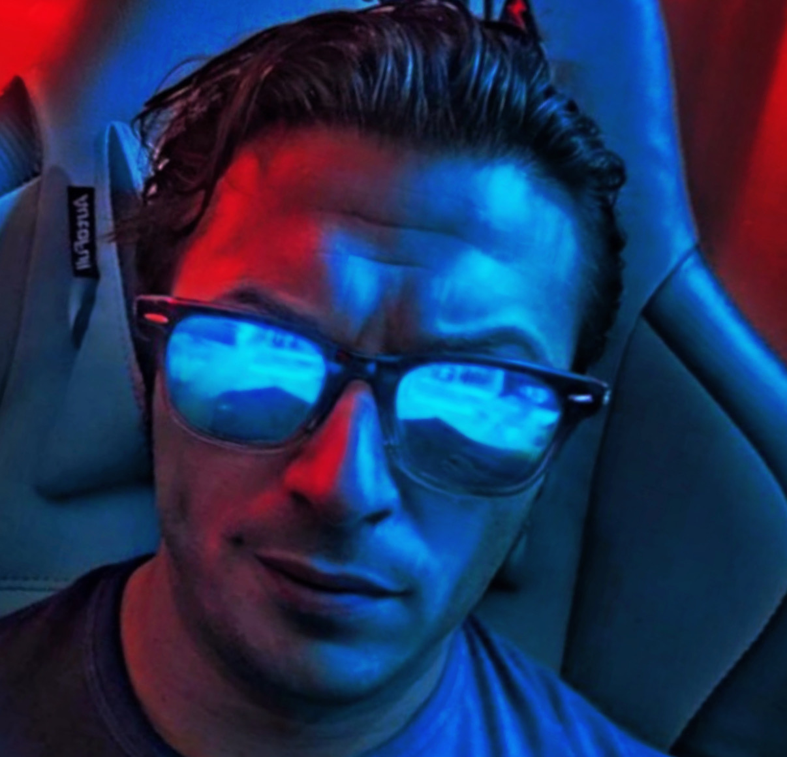

FondatoreStefano Davide Ciancimino
Fraud & Risk Analyst · Blockchain Researcher · Educatore Crypto · AI Specialist
Professionista con oltre otto anni di esperienza in analisi antifrode, gestione del rischio e operations. Vivo le crypto dal 2015 e ho creato Crypto Italia Facile per rendere Bitcoin, blockchain e Web3 accessibili a tutti — con parole semplici, zero hype e massima attenzione alla sicurezza.
La missione educativa
Crypto Italia Facile nasce da una convinzione semplice: capire le crypto non dovrebbe essere un privilegio di pochi esperti. Troppi contenuti online promettono ricchezza facile; noi promettiamo chiarezza.
Il mio obiettivo come fondatore e educatore è accompagnarti con guide passo-passo, analisi oneste e un linguaggio che chiunque può capire. Non vendiamo sogni — costruiamo competenza.
Educare, non vendere. Ogni articolo, guida e tip su questo portale ha un solo scopo: aiutarti a capire e muoverti nel mondo crypto in sicurezza.
Competenze e background
₿ Crypto & Blockchain
Ricercatore dal 2017. Analisi protocolli, DeFi/CeFi, Bitcoin, Cardano. Formazione interna e investimenti strategici.
🛡 Antifrode & Risk
9 anni presso PayPal in fraud prevention e seller risk. Investigazioni, monitoraggio transazioni, mitigazione perdite.
🤖 AI & Automazione
Prompt engineering, agenti AI locali, automazione operativa. Creatore dell'assistente Satoshi AI integrato nel sito.
📚 Educazione
Blogger, divulgatore e creatore di contenuti educativi. Missione: rendere la crypto comprensibile per tutti.